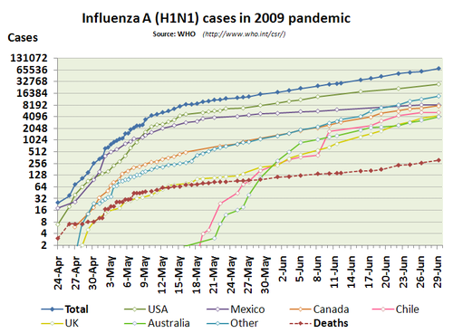

Cairo's Techniques
Techniques to Highlight Meaningful Changes in Visualizations:
- Moving Average
- A new form of a trendline that resembles the shape of the
shape of the raw data more than a linear model and better
fits the data. The computer divides the the time series
into smaller chunks and calculates an average for each chunk,
rather than the entire period, as was the case before.
There are many kinds of moving averages including, but not
limited to: simple, arithmetic, weighted, and exponential.
- Ex: Stock Market Visual
- Zero-Based Index
- A way to better represent the relative change in a
visualization. It uses an index origin (the 0 percent in the
charts), which is the average from the point of inflection
on a raw score chart, to base the percent change values off.
In this form of a chart the y-axis is the difference between
a value and the index origin that has been chosen.
- Ex: Housing Prices Visual
- Logarithmic Scale
- These scales allow users to visualize the patterns of
change for data sets with extremely large values easier.
By changing the y-axis scale to an integer power of a
chosen base number (usually 10), the axis is able to be
human-friendly. Without log transofrmations rates of
change may become invisible to the naked eye.
- Ex:
